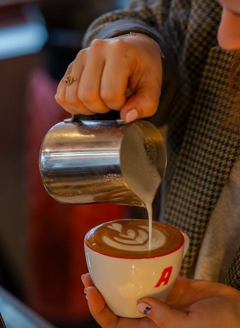
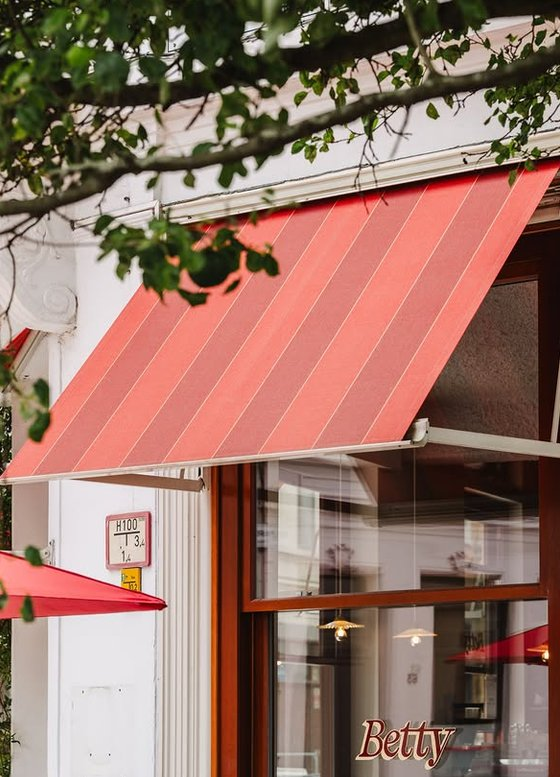
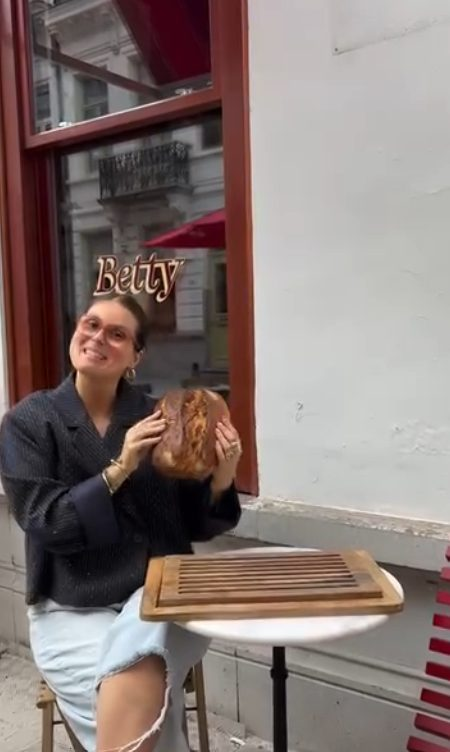
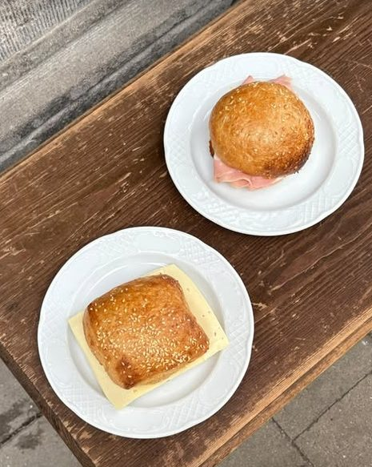

Specialty coffee
Gebrand door Andy Roasters in Antwerpen — van espresso en cortado tot filterkoffie met de hand gezet aan de bar.
- Espresso & cortado
- Oat cortado
- Filterkoffie (V60)
- Matcha & warme chocolademelk
Friendly neighbourhood café — specialty coffee, huisgemaakt zuurdesem en natuurwijn in het hart van Oud-Berchem.
Belpairestraat 28 · Berchem
Café Betty opende eind augustus 2025 haar deuren in het voormalige pand van café Het Been, een vertrouwde buurtkroeg die na jaren trouwe dienst moest sluiten toen de uitbaatster om gezondheidsredenen moest stoppen.
Dave Haesen en Kjell Maes — bekend van koffiebar Andy Roasters in Antwerpen-Zuid — namen het pand over en sloegen de handen ineen met Olivier Hendrikx, mede-eigenaar van Andy. Ze kozen bewust om de geschiedenis van de plek niet verloren te laten gaan.
"Als eerbetoon aan de vorige eigenaar hebben we onze nieuwe zaak Café Betty genoemd — een knipoog naar Het Been."
Het interieur werd volledig gestript en heropgebouwd: de bar en het meubilair zijn op maat ontworpen door Antwerps designer Nick Bal, met afwerking in gerecycleerd plastic van het Brusselse Albatros. Wat bleef, is de warmte van een echt buurtcafé.

Dezelfde specialty coffee als bij Andy Roasters, aangevuld met huisgemaakt zuurdesemgebak uit de eigen bakkerij in Borgerhout — en op vrijdag & zaterdag een glas natuurwijn erbij.

Gebrand door Andy Roasters in Antwerpen — van espresso en cortado tot filterkoffie met de hand gezet aan de bar.

Elke ochtend vers van de eigen zuurdesembakkerij: van hartige broodjes tot zoet gebak, gebakken voor Andy, Betty én Butchers.

Op vrijdag- en zaterdagavond blijft Betty open tot 19u voor een glas natuurwijn of bubbels met een beperkte, doordachte snackkaart. Geen klassiek café — wel dat extra uurtje dat de buurt nodig heeft.
Een greep uit het interieur en de kaart — gefotografeerd door de buurt zelf.
Café Betty is het warme zusje van koffiebar Andy Roasters in Antwerpen-Zuid en van Butchers Coffee. Dezelfde specialty coffee, dezelfde zuurdesembakkerij — maar met een eigen karakter, gebouwd rond de geschiedenis van Oud-Berchem.
Mokken, caps en tees uit de Andy Roasters-collectie komen binnenkort ook naar Café Betty. Tot dan shop je ze via de Andy-webshop.
Openingsuren onder voorbehoud van feestdagen en besloten momenten — check @cafe.betty op Instagram voor de actuele stand van zaken.